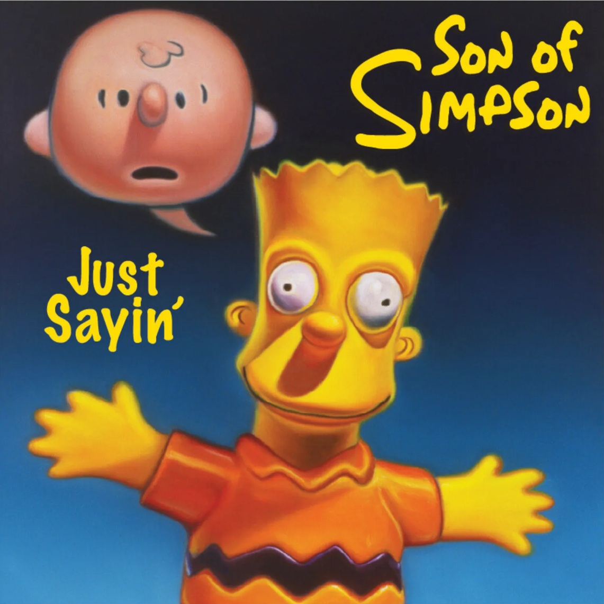

Literature
Ron English, Abject Expressionism: The Art of Ron English (San Francisco: Last Gasp, 2007), p. 174. ISBN 978-0867196894.

Notes
In Abject Expressionism, this work was erroneously reported as 30 × 24 inches.
This composition was later adapted by the artist as a limited-edition print in the Vinyl Chord: A Revolutionary Record Store series.
Ancillary Documentation



Provenance
Private collection.